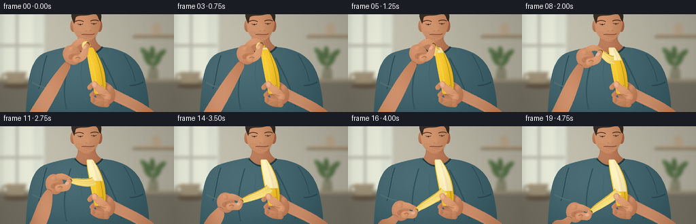
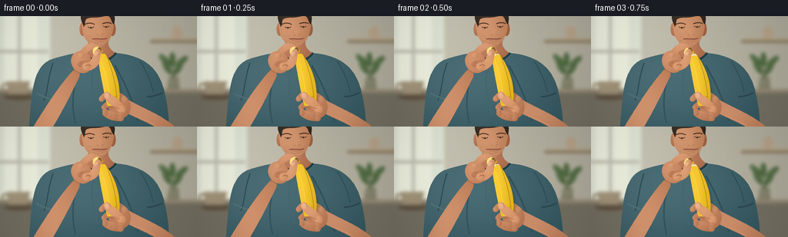

CODING AGENTS AS PIXEL WORLD MODELS
traex/GPT-6.1-Sol · motion_rationality_0007
点击播放 · 原生 RGB 像素
逐轮保存的候选
回放视频、检查图与代码变化。
每份候选均可单独播放。实际图片检查记录在下方工具轨迹中。
候选 01播放与检查图
点击播放 · 原生 RGB 像素


展开代码变化
--- 上一保存版本
+++ 本次保存版本
@@ -0,0 +1,237 @@
+"""Procedural RGB close-up of a person peeling a banana. No external assets."""
+from pathlib import Path
+import math
+import numpy as np
+from PIL import Image, ImageDraw, ImageFilter
+import artifact_io
+
+W,H,S=256,144,4
+SZ=(W*S,H*S)
+rng=np.random.default_rng(14)
+Y,X=np.mgrid[0:H*S,0:W*S].astype(float)/S
+NOISE=rng.normal(0,.65,(H*S,W*S))
+
+def pts(p): return [(float(x)*S,float(y)*S) for x,y in p]
+def bez(p,n=40):
+ a,b,c,d=np.array(p,float); t=np.linspace(0,1,n)[:,None]
+ return (1-t)**3*a+3*(1-t)**2*t*b+3*(1-t)*t*t*c+t**3*d
+
+def path(curves):
+ return np.concatenate([bez(c) for c in curves])
+def mask_poly(p):
+ m=Image.new('L',SZ); ImageDraw.Draw(m).polygon(pts(p),fill=255); return m
+
+def shape(im,p,base,light=18,texture=.4,center=None):
+ m=mask_poly(p)
+ p=np.array(p)
+ if center is None: center=(p[:,0].mean()-6,p[:,1].mean()-8)
+ cx,cy=center
+ ww=max(7,np.ptp(p[:,0])); hh=max(9,np.ptp(p[:,1]))
+ field=light*(1.2*np.exp(-((X-cx)/(ww*.7))**2-((Y-cy)/(hh*.9))**2)-.55)
+ field+=NOISE*texture
+ rgb=np.clip(np.array(base)[None,None,:]+field[:,:,None],0,255).astype('uint8')
+ im.paste(Image.fromarray(rgb), (0,0),m)
+ return m
+
+def line(im,p,col,width=1):
+ ImageDraw.Draw(im).line(pts(p),fill=col,width=max(1,round(width*S)),joint='curve')
+def ellipse_points(cx,cy,rx,ry,ang=0,n=70):
+ t=np.linspace(0,2*np.pi,n); a=np.deg2rad(ang)
+ return np.array([cx+rx*np.cos(t)*np.cos(a)-ry*np.sin(t)*np.sin(a),cy+rx*np.cos(t)*np.sin(a)+ry*np.sin(t)*np.cos(a)]).T
+
+def ellipse(im,box,col):
+ ImageDraw.Draw(im).ellipse(tuple(v*S for v in box),fill=col)
+
+def tube_points(points,radii):
+ p=np.array(points,float); tan=np.gradient(p,axis=0); norm=np.c_[-tan[:,1],tan[:,0]]
+ norm/=np.maximum(np.linalg.norm(norm,axis=1)[:,None],.001)
+ rad=np.interp(np.linspace(0,1,len(p)),np.linspace(0,1,len(radii)),radii)
+ return np.r_[p+norm*rad[:,None],(p-norm*rad[:,None])[::-1]]
+
+def tube(im,controls,radii,base=(190,126,89),light=22):
+ p=bez(controls,50); poly=tube_points(p,radii)
+ shape(im,poly,base,light,center=(p[len(p)//2,0]-3,p[len(p)//2,1]-4))
+ # round finger ends
+ for pos,r in [(p[0],radii[0]),(p[-1],radii[-1])]:
+ shape(im,ellipse_points(*pos,r,r),base,light,center=(pos[0]-2,pos[1]-2))
+ return p
+
+# Warm, softly defocused kitchen.
+bgarr=np.zeros((H*S,W*S,3),np.uint8)
+base=np.array([189,185,169])[None,None,:]
+illum=16*np.exp(-((X-34)/95)**2-((Y-22)/100)**2)-14*(X/W)
+bgarr[:]=np.clip(base+illum[:,:,None]+NOISE[:,:,None]*.3,0,255)
+bg=Image.fromarray(bgarr)
+d=ImageDraw.Draw(bg)
+d.rectangle([0,0,65*S,103*S],fill=(223,228,213))
+d.rectangle([5*S,0,49*S,91*S],fill=(238,240,223))
+d.rectangle([23*S,0,27*S,98*S],fill=(193,195,181))
+d.rectangle([0,44*S,63*S,48*S],fill=(192,191,175))
+d.rectangle([0,95*S,256*S,100*S],fill=(148,137,116))
+d.rectangle([0,100*S,256*S,144*S],fill=(114,110,96))
+d.rectangle([195*S,31*S,256*S,35*S],fill=(139,125,102))
+d.rectangle([201*S,29*S,256*S,31*S],fill=(184,164,131))
+ellipse(bg,(223,13,237,31),(181,161,136))
+# plant in a stoneware pot
+shape(bg,[(217,95),(233,95),(232,79),(219,79)],(132,131,108),10)
+for cx,cy,a in [(217,67,-32),(231,69,35),(224,57,0),(236,59,50),(214,57,-45)]:
+ line(bg,[(225,82),(cx,cy)],(88,100,68),1)
+ shape(bg,ellipse_points(cx,cy,4,10,a),(83,109,69),12)
+ellipse(bg,(5,102,45,109),(93,80,63))
+shape(bg,[(11,102),(9,85),(39,85),(35,102)],(160,146,120),10)
+line(bg,bez([(11,90),(0,83),(0,101),(12,98)]),(151,135,110),3)
+bg=bg.filter(ImageFilter.GaussianBlur(2.2*S))
+
+# Person: shirt, shoulders, neck and face are stable through the shot.
+body=bg.copy()
+shirt=path([[(38,144),(41,99),(43,64),(68,56)],[(68,56),(83,51),(103,47),(114,46)],[(114,46),(128,44),(140,46),(150,48)],[(150,48),(184,51),(205,65),(213,96)],[(213,96),(217,114),(220,131),(219,144)]])
+shape(body,shirt,(59,93,101),25,texture=1,center=(92,75))
+# Shirt folds and softly lit shoulder seam.
+for controls,col,width in [([(69,61),(62,80),(62,99),(57,110)],(42,73,80),1.2), ([(182,59),(191,72),(196,84),(199,99)],(46,78,85),1.2), ([(104,62),(96,90),(91,111),(98,140)],(52,85,94),2), ([(149,64),(160,83),(172,107),(179,137)],(48,81,89),2), ([(121,70),(117,91),(121,108),(127,127)],(68,103,109),1.5)]:
+ line(body,bez(controls),col,width)
+# sleeves at either side
+line(body,bez([(47,100),(54,104),(62,108),(72,109)]),(80,113,117),2)
+line(body,bez([(191,105),(198,105),(204,103),(211,100)]),(44,72,80),2)
+neck=path([[(114,28),(115,36),(115,40),(111,47)],[(111,47),(118,59),(137,61),(150,48)],[(150,48),(140,42),(139,34),(142,28)]])
+shape(body,neck,(174,111,78),24,center=(120,42))
+line(body,bez([(110,48),(120,62),(140,63),(151,48)]),(34,64,72),3)
+line(body,bez([(110,50),(122,64),(141,64),(152,50)]),(83,117,121),.8)
+# ears and short-haired adult head
+shape(body,ellipse_points(108,17,4.6,9),(182,120,86),22)
+shape(body,ellipse_points(146,17,4.4,9),(166,104,73),18)
+head=path([[(107,6),(109,-13),(146,-14),(148,8)],[(148,8),(148,22),(143,34),(131,40)],[(131,40),(121,42),(110,32),(108,23)],[(108,23),(107,17),(106,12),(107,6)]])
+shape(body,head,(194,133,94),29,texture=.6,center=(117,12))
+hair=path([[(107,9),(101,-4),(109,-13),(126,-14)],[(126,-14),(145,-14),(152,-4),(148,11)],[(148,11),(143,6),(146,2),(139,-1)],[(139,-1),(126,4),(118,0),(112,4)],[(112,4),(110,6),(111,10),(109,14)]])
+shape(body,hair,(51,41,33),17,texture=1.2)
+line(body,bez([(110,11),(115,8),(120,9),(123,11)]),(85,56,41),1.2)
+line(body,bez([(133,10),(138,8),(142,8),(145,10)]),(76,48,36),1.2)
+# lowered eyes, looking at hands
+for x,y in [(118,14),(138,13)]:
+ line(body,bez([(x-4,y),(x-1,y+1.6),(x+1,y+2),(x+4,y)]),(80,55,44),.8)
+ ellipse(body,(x-1,y,x+1.1,y+2),(58,44,34))
+ line(body,[(x-4,y+2.5),(x+3,y+3)],(173,113,82),.4)
+# nose / lips / chin
+shape(body,path([[(128,13),(128,17),(125,21),(126,24)],[(126,24),(128,26),(134,25),(135,23)],[(135,23),(134,20),(133,17),(133,13)]]),(204,142,103),12,center=(128,19))
+line(body,[(126,24),(128,24.5)],(130,79,59),.6)
+line(body,[(132,24),(134,23.7)],(125,76,53),.6)
+line(body,bez([(120,30),(125,28.8),(134,31.2),(139,28.8)]),(135,76,65),1.2)
+line(body,bez([(123,31),(128,33),(133,32),(137,30.7)]),(192,123,92),1)
+line(body,bez([(124,36),(129,38),(135,36),(137,34)]),(209,150,111),.7)
+# Fine stubble under the jaw, subtle and deterministic.
+for i in range(180):
+ xx=rng.uniform(112,144); yy=rng.uniform(25,38)
+ if ((xx-129)/18)**2+((yy-24)/17)**2<1 and not(120<xx<139 and yy<33):
+ line(body,[(xx,yy),(xx+.1,yy+.35)],(155,103,75),.18)
+
+
+def fruit_center(v):
+ return np.c_[132+15*v+3*np.sin(np.pi*v),49+68*v]
+def fruit_radius(v):
+ return 4+6.4*np.sin(np.pi*np.minimum(v,1)*.88)**.65
+
+def banana_poly(vmax=1,scale=1):
+ v=np.linspace(0,vmax,90); c=fruit_center(v); r=fruit_radius(v)*scale
+ # simple curved cross section
+ return np.r_[c+np.c_[-r,np.zeros(len(v))],(c+np.c_[r,np.zeros(len(v))])[::-1]]
+
+def make_frame(i):
+ im=body.copy()
+ u=i/19
+ # Brief tip pinch, followed by a single continuous, controlled downward pull.
+ f=np.clip((u-.06)/.85,0,1)
+ f=f*f*(3-2*f)
+ r=.012+.68*f
+ root=fruit_center(np.array([r]))[0]+np.array([-3.2,0])
+ angle=-np.pi/2-2.22*(f**.85)
+ length=4+68*r
+ tip=root+length*np.array([np.cos(angle),np.sin(angle)])
+ # The hand tilts gradually as the peel turns outward and down.
+ palm=tip+np.array([-22,13-15*f]); wrist=palm+np.array([-12,12-5*f])
+ # rear support forearm rises naturally from the right edge
+ support_arm=path([[(215,153),(200,141),(171,131),(151,119)],[(151,119),(145,112),(151,104),(160,105)],[(160,105),(178,117),(207,127),(226,143)]])
+ shape(im,support_arm,(187,124,88),29,texture=.6,center=(179,125))
+ # working forearm and wrist behind the banana
+ workarm=path([[ (40,150),(53,128),(wrist[0]-15,wrist[1]+15),tuple(wrist-[-2,1]) ],[tuple(wrist-[-2,1]),tuple(wrist+[7,-4]),tuple(wrist+[9,4]),tuple(wrist+[8,9])],[tuple(wrist+[8,9]),(77,134),(64,151),(61,158)]])
+ shape(im,workarm,(193,130,92),29,texture=.7,center=(68,125))
+ shape(im,ellipse_points(palm[0]-1,palm[1]+2,13,15,-35+25*f),(195,130,92),28,center=tuple(palm+[-6,-4]))
+ # relaxed ring and little finger behind active pinch
+ for j in range(2):
+ start=palm+np.array([-3+j*5,5+j*2])
+ end=palm+np.array([7+j*3,8+j*2])
+ tube(im,[start,start+[8,-4],end+[6,-4],end],[3.5,3.7,3],(182+5*j,117+4*j,81+3*j),20)
+ line(im,[end+[-2,-1],end+[1,1]],(143,90,63),.4)
+ # index finger reaches to the free end, positioned behind the peel
+ index_start=palm+np.array([-2,-6])
+ index_curve=[index_start,palm+[6,-19+12*f],tip+[-8,-9+3*f],tip+[-.5,-1.8]]
+ tube(im,index_curve,[4.2,4.4,3.3],(203,139,99),27)
+ line(im,bez([index_start+[-1,-1],palm+[5,-15+10*f],tip+[-9,-6+2*f],tip+[-4,-3]]),(222,157,112),.55)
+ # rear cradle fingers around the lower banana
+ shape(im,ellipse_points(155,117,14.2,16.5,-25),(185,121,85),26,center=(150,109))
+ tube(im,[(161,109),(150,99),(139,99),(132,108)],[4.6,4.5,3.5],(193,130,91),25)
+ tube(im,[(161,121),(151,113),(141,112),(135,119)],[4.5,4.3,3.2],(188,123,87),23)
+ # shadow cast by banana on supporting hand, with softened edge
+ shadow=Image.new('RGBA',SZ)
+ ImageDraw.Draw(shadow).polygon(pts(banana_poly()+[2.5,2.5]),fill=(63,42,18,55))
+ shadow=shadow.filter(ImageFilter.GaussianBlur(1.5*S)); im=Image.alpha_composite(im.convert('RGBA'),shadow).convert('RGB')
+ # golden unpeeled banana with a continuous curved silhouette
+ hull=banana_poly()
+ shape(im,hull,(234,188,37),28,texture=.6,center=(131,82))
+ line(im,fruit_center(np.linspace(.05,1,70))+[5.8,0],(177,130,21),.75)
+ line(im,fruit_center(np.linspace(.07,1,70))+[-4,0],(255,219,69),.75)
+ # tiny natural speckles on the untouched lower peel
+ for v,off in [(.82,4),(.96,-2),(.91,5),(.75,-4),(.86,-6)]:
+ c=fruit_center(np.array([v]))[0]
+ ellipse(im,(c[0]+off-.45,c[1]-.5,c[0]+off+.45,c[1]+.5),(167,124,34))
+ # Exposed pale flesh expands down exactly to the moving separation point.
+ if f>.006:
+ shape(im,banana_poly(r,.86),(247,232,178),18,texture=.45,center=(131,67))
+ for off,col in [(-3,(255,246,206)),(2.7,(225,207,147))]:
+ line(im,fruit_center(np.linspace(.04,r,65))+[off,0],col,.55)
+ line(im,fruit_center(np.linspace(.04,r,65))+[-.9,0],(255,246,208),1)
+ # Flexible peel ribbon, continuously attached at the lower edge of exposed flesh.
+ tangent=np.array([np.cos(angle),np.sin(angle)])
+ ctrl1=root+np.array([-6-4*f,-7+19*f])
+ ctrl2=tip-tangent*(length*.25)+np.array([-4*f,0])
+ cp=bez([root,ctrl1,ctrl2,tip],75)
+ strip=tube_points(cp,[6.3,5.9,5,3.0])
+ shape(im,strip,(238,211,111),23,texture=.5,center=(cp[:,0].mean()-3,cp[:,1].mean()-4))
+ # Yellow outer edge and pale fibrous inner peel.
+ tang=np.gradient(cp,axis=0); normal=np.c_[-tang[:,1],tang[:,0]]; normal/=np.linalg.norm(normal,axis=1)[:,None]
+ rad=np.linspace(6.1,3,len(cp))
+ line(im,cp+normal*rad[:,None],(215,166,32),1.2)
+ line(im,cp-normal*(rad*.70)[:,None],(255,234,157),.85)
+ line(im,cp+normal*1.2,(226,194,93),.5)
+ # stem at the free end, travels with the peeled ribbon
+ stem_end=tip+tangent*2.3
+ tube(im,[tip,tip+tangent*.8,stem_end,stem_end],[2.8,2.5,2.0],(124,91,36),15)
+ line(im,[tip+[-1,-.7],stem_end+[-1,-.5]],(160,126,55),.6)
+ # thumb in front pinches against the index pad, securely gripping the stem
+ thumbstart=palm+np.array([5,8])
+ thumbend=tip+np.array([-1.6,1.7])
+ thumbpoints=[thumbstart,palm+np.array([19,7]),tip+np.array([-5,9]),thumbend]
+ tube(im,thumbpoints,[5.2,5.4,3.8],(206,142,100),28)
+ nailcenter=thumbend+np.array([-3,2.1])
+ shape(im,ellipse_points(*nailcenter,3.0,2.0,-40+35*f),(227,173,139),13,texture=.3,center=tuple(nailcenter+[-1,-1]))
+ line(im,bez([thumbstart+[-1,-1],thumbstart+[2,-3],thumbstart+[4,-3],thumbstart+[6,-1]]),(161,98,67),.65)
+ # supporting hand front thumb and lower fingers overlap the yellow base only
+ tube(im,[(158,122),(155,115),(142,109),(139,103)],[5.2,5.7,4.3],(207,141,99),28)
+ shape(im,ellipse_points(139.1,103.6,3.2,4.0,-24),(226,172,134),14,center=(138,102))
+ line(im,bez([(147,117),(150,119),(154,121),(156,120)]),(161,98,64),.6)
+ for j in range(2):
+ tube(im,[(157,129+j*4),(150,131+j*2),(141,128+j*3),(136.5,124+j*3)],[4,4.1,3.3],(190-j*5,125-j*4,87-j*3),23)
+ line(im,[(145,127+j*3),(143,128+j*3)],(147,90,60),.5)
+ # Fine skin creases, wrist tendon and warm highlight.
+ line(im,bez([wrist+[-1,1],wrist+[2,0],wrist+[5,2],wrist+[7,4]]),(153,95,64),.5)
+ line(im,bez([(173,129),(184,133),(193,137),(202,143)]),(217,151,107),.7)
+ # Gentle optical vignette and film-like fine grain, temporally stable.
+ arr=np.asarray(im,dtype=float)
+ vignette=1-.12*((X-128)/163)**2-.05*((Y-76)/110)**2
+ arr=arr*vignette[:,:,None]+NOISE[:,:,None]*.3
+ im=Image.fromarray(np.clip(arr,0,255).astype('uint8'))
+ im=im.resize((W,H),Image.Resampling.LANCZOS)
+ return np.asarray(im)
+
+if __name__=='__main__':
+ frames=np.stack([make_frame(i) for i in range(20)])
+ artifact_io.save(frames,Path(__file__).resolve().parent)
+ print(f'Saved {frames.shape} {frames.dtype} RGB frames.')
可观测工具轨迹
实际执行的命令与返回图片。
命令 1exit 0
/bin/bash -lc 'ls -la; cat prompt.txt; cat GENERATION_RULES.md; cat task_spec.json'
命令 2exit 0
/bin/bash -lc "cat artifact_io.py; find . -maxdepth 2 -type f -not -path './.git/*' -not -path './.aws/*' -not -path './.codex/*' -not -path './.agents/*'"
命令 3exit 0
/bin/bash -lc "cat > generate.py <<'PY'
\"\"\"Procedural RGB close-up of a person peeling a banana. No external assets.\"\"\"
from pathlib import Path
import math
import numpy as np
from PIL import Image, ImageDraw, ImageFilter
import artifact_io
W,H,S=256,144,4
SZ=(W*S,H*S)
rng=np.random.default_rng(14)
Y,X=np.mgrid[0:H*S,0:W*S].astype(float)/S
NOISE=rng.normal(0,.65,(H*S,W*S))
def pts(p): return [(float(x)*S,float(y)*S) for x,y in p]
def bez(p,n=40):
a,b,c,d=np.array(p,float); t=np.linspace(0,1,n)[:,None]
return (1-t)**3*a+3*(1-t)**2*t*b+3*(1-t)*t*t*c+t**3*d
def path(curves):
return np.concatenate([bez(c) for c in curves])
def mask_poly(p):
m=Image.new('L',SZ); ImageDraw.Draw(m).polygon(pts(p),fill=255); return m
def shape(im,p,base,light=18,texture=.4,center=None):
m=mask_poly(p)
p=np.array(p)
if center is None: center=(p[:,0].mean()-6,p[:,1].mean()-8)
cx,cy=center
ww=max(7,np.ptp(p[:,0])); hh=max(9,np.ptp(p[:,1]))
field=light*(1.2*np.exp(-((X-cx)/(ww*.7))**2-((Y-cy)/(hh*.9))**2)-.55)
field+=NOISE*texture
rgb=np.clip(np.array(base)[None,None,:]+field[:,:,None],0,255).astype('uint8')
im.paste(Image.fromarray(rgb), (0,0),m)
return m
def line(im,p,col,width=1):
ImageDraw.Draw(im).line(pts(p),fill=col,width=max(1,round(width*S)),joint='curve')
def ellipse_points(cx,cy,rx,ry,ang=0,n=70):
t=np.linspace(0,2*np.pi,n); a=np.deg2rad(ang)
return np.array([cx+rx*np.cos(t)*np.cos(a)-ry*np.sin(t)*np.sin(a),cy+rx*np.cos(t)*np.sin(a)+ry*np.sin(t)*np.cos(a)]).T
def ellipse(im,box,col):
ImageDraw.Draw(im).ellipse(tuple(v*S for v in box),fill=col)
def tube_points(points,radii):
p=np.array(points,float); tan=np.gradient(p,axis=0); norm=np.c_[-tan[:,1],tan[:,0]]
norm/=np.maximum(np.linalg.norm(norm,axis=1)[:,None],.001)
rad=np.interp(np.linspace(0,1,len(p)),np.linspace(0,1,len(radii)),radii)
return np.r_[p+norm*rad[:,None],(p-norm*rad[:,None])[::-1]]
def tube(im,controls,radii,base=(190,126,89),light=22):
p=bez(controls,50); poly=tube_points(p,radii)
shape(im,poly,base,light,center=(p[len(p)//2,0]-3,p[len(p)//2,1]-4))
# round finger ends
for pos,r in [(p[0],radii[0]),(p[-1],radii[-1])]:
shape(im,ellipse_points(*pos,r,r),base,light,center=(pos[0]-2,pos[1]-2))
return p
# Warm, softly defocused kitchen.
bgarr=np.zeros((H*S,W*S,3),np.uint8)
base=np.array([189,185,169])[None,None,:]
illum=16*np.exp(-((X-34)/95)**2-((Y-22)/100)**2)-14*(X/W)
bgarr[:]=np.clip(base+illum[:,:,None]+NOISE[:,:,None]*.3,0,255)
bg=Image.fromarray(bgarr)
d=ImageDraw.Draw(bg)
d.rectangle([0,0,65*S,103*S],fill=(223,228,213))
d.rectangle([5*S,0,49*S,91*S],fill=(238,240,223))
d.rectangle([23*S,0,27*S,98*S],fill=(193,195,181))
d.rectangle([0,44*S,63*S,48*S],fill=(192,191,175))
d.rectangle([0,95*S,256*S,100*S],fill=(148,137,116))
d.rectangle([0,100*S,256*S,144*S],fill=(114,110,96))
d.rectangle([195*S,31*S,256*S,35*S],fill=(139,125,102))
d.rectangle([201*S,29*S,256*S,31*S],fill=(184,164,131))
ellipse(bg,(223,13,237,31),(181,161,136))
# plant in a stoneware pot
shape(bg,[(217,95),(233,95),(232,79),(219,79)],(132,131,108),10)
for cx,cy,a in [(217,67,-32),(231,69,35),(224,57,0),(236,59,50),(214,57,-45)]:
line(bg,[(225,82),(cx,cy)],(88,100,68),1)
shape(bg,ellipse_points(cx,cy,4,10,a),(83,109,69),12)
ellipse(bg,(5,102,45,109),(93,80,63))
shape(bg,[(11,102),(9,85),(39,85),(35,102)],(160,146,120),10)
line(bg,bez([(11,90),(0,83),(0,101),(12,98)]),(151,135,110),3)
bg=bg.filter(ImageFilter.GaussianBlur(2.2*S))
# Person: shirt, shoulders, neck and face are stable through the shot.
body=bg.copy()
shirt=path([[(38,144),(41,99),(43,64),(68,56)],[(68,56),(83,51),(103,47),(114,46)],[(114,46),(128,44),(140,46),(150,48)],[(150,48),(184,51),(205,65),(213,96)],[(213,96),(217,114),(220,131),(219,144)]])
shape(body,shirt,(59,93,101),25,texture=1,center=(92,75))
# Shirt folds and softly lit shoulder seam.
for controls,col,width in [([(69,61),(62,80),(62,99),(57,110)],(42,73,80),1.2), ([(182,59),(191,72),(196,84),(199,99)],(46,78,85),1.2), ([(104,62),(96,90),(91,111),(98,140)],(52,85,94),2), ([(149,64),(160,83),(172,107),(179,137)],(48,81,89),2), ([(121,70),(117,91),(121,108),(127,127)],(68,103,109),1.5)]:
line(body,bez(controls),col,width)
# sleeves at either side
line(body,bez([(47,100),(54,104),(62,108),(72,109)]),(80,113,117),2)
line(body,bez([(191,105),(198,105),(204,103),(211,100)]),(44,72,80),2)
neck=path([[(114,28),(115,36),(115,40),(111,47)],[(111,47),(118,59),(137,61),(150,48)],[(150,48),(140,42),(139,34),(142,28)]])
shape(body,neck,(174,111,78),24,center=(120,42))
line(body,bez([(110,48),(120,62),(140,63),(151,48)]),(34,64,72),3)
line(body,bez([(110,50),(122,64),(141,64),(152,50)]),(83,117,121),.8)
# ears and short-haired adult head
shape(body,ellipse_points(108,17,4.6,9),(182,120,86),22)
shape(body,ellipse_points(146,17,4.4,9),(166,104,73),18)
head=path([[(107,6),(109,-13),(146,-14),(148,8)],[(148,8),(148,22),(143,34),(131,40)],[(131,40),(121,42),(110,32),(108,23)],[(108,23),(107,17),(106,12),(107,6)]])
shape(body,head,(194,133,94),29,texture=.6,center=(117,12))
hair=path([[(107,9),(101,-4),(109,-13),(126,-14)],[(126,-14),(145,-14),(152,-4),(148,11)],[(148,11),(143,6),(146,2),(139,-1)],[(139,-1),(126,4),(118,0),(112,4)],[(112,4),(110,6),(111,10),(109,14)]])
shape(body,hair,(51,41,33),17,texture=1.2)
line(body,bez([(110,11),(115,8),(120,9),(123,11)]),(85,56,41),1.2)
line(body,bez([(133,10),(138,8),(142,8),(145,10)]),(76,48,36),1.2)
# lowered eyes, looking at hands
for x,y in [(118,14),(138,13)]:
line(body,bez([(x-4,y),(x-1,y+1.6),(x+1,y+2),(x+4,y)]),(80,55,44),.8)
ellipse(body,(x-1,y,x+1.1,y+2),(58,44,34))
line(body,[(x-4,y+2.5),(x+3,y+3)],(173,113,82),.4)
# nose / lips / chin
shape(body,path([[(128,13),(128,17),(125,21),(126,24)],[(126,24),(128,26),(134,25),(135,23)],[(135,23),(134,20),(133,17),(133,13)]]),(204,142,103),12,center=(128,19))
line(body,[(126,24),(128,24.5)],(130,79,59),.6)
line(body,[(132,24),(134,23.7)],(125,76,53),.6)
line(body,bez([(120,30),(125,28.8),(134,31.2),(139,28.8)]),(135,76,65),1.2)
line(body,bez([(123,31),(128,33),(133,32),(137,30.7)]),(192,123,92),1)
line(body,bez([(124,36),(129,38),(135,36),(137,34)]),(209,150,111),.7)
# Fine stubble under the jaw, subtle and deterministic.
for i in range(180):
xx=rng.uniform(112,144); yy=rng.uniform(25,38)
if ((xx-129)/18)**2+((yy-24)/17)**2<1 and not(120<xx<139 and yy<33):
line(body,[(xx,yy),(xx+.1,yy+.35)],(155,103,75),.18)
def fruit_center(v):
return np.c_[132+15*v+3*np.sin(np.pi*v),49+68*v]
def fruit_radius(v):
return 4+6.4*np.sin(np.pi*np.minimum(v,1)*.88)**.65
def banana_poly(vmax=1,scale=1):
v=np.linspace(0,vmax,90); c=fruit_center(v); r=fruit_radius(v)*scale
# simple curved cross section
return np.r_[c+np.c_[-r,np.zeros(len(v))],(c+np.c_[r,np.zeros(len(v))])[::-1]]
def make_frame(i):
im=body.copy()
u=i/19
# Brief tip pinch, followed by a single continuous, controlled downward pull.
f=np.clip((u-.06)/.85,0,1)
f=f*f*(3-2*f)
r=.012+.68*f
root=fruit_center(np.array([r]))[0]+np.array([-3.2,0])
angle=-np.pi/2-2.22*(f**.85)
length=4+68*r
tip=root+length*np.array([np.cos(angle),np.sin(angle)])
# The hand tilts gradually as the peel turns outward and down.
palm=tip+np.array([-22,13-15*f]); wrist=palm+np.array([-12,12-5*f])
# rear support forearm rises naturally from the right edge
support_arm=path([[(215,153),(200,141),(171,131),(151,119)],[(151,119),(145,112),(151,104),(160,105)],[(160,105),(178,117),(207,127),(226,143)]])
shape(im,support_arm,(187,124,88),29,texture=.6,center=(179,125))
# working forearm and wrist behind the banana
workarm=path([[ (40,150),(53,128),(wrist[0]-15,wrist[1]+15),tuple(wrist-[-2,1]) ],[tuple(wrist-[-2,1]),tuple(wrist+[7,-4]),tuple(wrist+[9,4]),tuple(wrist+[8,9])],[tuple(wrist+[8,9]),(77,134),(64,151),(61,158)]])
shape(im,workarm,(193,130,92),29,texture=.7,center=(68,125))
shape(im,ellipse_points(palm[0]-1,palm[1]+2,13,15,-35+25*f),(195,130,92),28,center=tuple(palm+[-6,-4]))
# relaxed ring and little finger behind active pinch
for j in range(2):
start=palm+np.array([-3+j*5,5+j*2])
end=palm+np.array([7+j*3,8+j*2])
tube(im,[start,start+[8,-4],end+[6,-4],end],[3.5,3.7,3],(182+5*j,117+4*j,81+3*j),20)
line(im,[end+[-2,-1],end+[1,1]],(143,90,63),.4)
# index finger reaches to the free end, positioned behind the peel
index_start=palm+np.array([-2,-6])
index_curve=[index_start,palm+[6,-19+12*f],tip+[-8,-9+3*f],tip+[-.5,-1.8]]
tube(im,index_curve,[4.2,4.4,3.3],(203,139,99),27)
line(im,bez([index_start+[-1,-1],palm+[5,-15+10*f],tip+[-9,-6+2*f],tip+[-4,-3]]),(222,157,112),.55)
# rear cradle fingers around the lower banana
shape(im,ellipse_points(155,117,14.2,16.5,-25),(185,121,85),26,center=(150,109))
tube(im,[(161,109),(150,99),(139,99),(132,108)],[4.6,4.5,3.5],(193,130,91),25)
tube(im,[(161,121),(151,113),(141,112),(135,119)],[4.5,4.3,3.2],(188,123,87),23)
# shadow cast by banana on supporting hand, with softened edge
shadow=Image.new('RGBA',SZ)
ImageDraw.Draw(shadow).polygon(pts(banana_poly()+[2.5,2.5]),fill=(63,42,18,55))
shadow=shadow.filter(ImageFilter.GaussianBlur(1.5*S)); im=Image.alpha_composite(im.convert('RGBA'),shadow).convert('RGB')
# golden unpeeled banana with a continuous curved silhouette
hull=banana_poly()
shape(im,hull,(234,188,37),28,texture=.6,center=(131,82))
line(im,fruit_center(np.linspace(.05,1,70))+[5.8,0],(177,130,21),.75)
line(im,fruit_center(np.linspace(.07,1,70))+[-4,0],(255,219,69),.75)
# tiny natural speckles on the untouched lower peel
for v,off in [(.82,4),(.96,-2),(.91,5),(.75,-4),(.86,-6)]:
c=fruit_center(np.array([v]))[0]
ellipse(im,(c[0]+off-.45,c[1]-.5,c[0]+off+.45,c[1]+.5),(167,124,34))
# Exposed pale flesh expands down exactly to the moving separation point.
if f>.006:
shape(im,banana_poly(r,.86),(247,232,178),18,texture=.45,center=(131,67))
for off,col in [(-3,(255,246,206)),(2.7,(225,207,147))]:
line(im,fruit_center(np.linspace(.04,r,65))+[off,0],col,.55)
line(im,fruit_center(np.linspace(.04,r,65))+[-.9,0],(255,246,208),1)
# Flexible peel ribbon, continuously attached at the lower edge of exposed flesh.
tangent=np.array([np.cos(angle),np.sin(angle)])
ctrl1=root+np.array([-6-4*f,-7+19*f])
ctrl2=tip-tangent*(length*.25)+np.array([-4*f,0])
cp=bez([root,ctrl1,ctrl2,tip],75)
strip=tube_points(cp,[6.3,5.9,5,3.0])
shape(im,strip,(238,211,111),23,texture=.5,center=(cp[:,0].mean()-3,cp[:,1].mean()-4))
# Yellow outer edge and pale fibrous inner peel.
tang=np.gradient(cp,axis=0); normal=np.c_[-tang[:,1],tang[:,0]]; normal/=np.linalg.norm(normal,axis=1)[:,None]
rad=np.linspace(6.1,3,len(cp))
line(im,cp+normal*rad[:,None],(215,166,32),1.2)
line(im,cp-normal*(rad*.70)[:,None],(255,234,157),.85)
line(im,cp+normal*1.2,(226,194,93),.5)
# stem at the free end, travels with the peeled ribbon
stem_end=tip+tangent*2.3
tube(im,[tip,tip+tangent*.8,stem_end,stem_end],[2.8,2.5,2.0],(124,91,36),15)
line(im,[tip+[-1,-.7],stem_end+[-1,-.5]],(160,126,55),.6)
# thumb in front pinches against the index pad, securely gripping the stem
thumbstart=palm+np.array([5,8])
thumbend=tip+np.array([-1.6,1.7])
thumbpoints=[thumbstart,palm+np.array([19,7]),tip+np.array([-5,9]),thumbend]
tube(im,thumbpoints,[5.2,5.4,3.8],(206,142,100),28)
nailcenter=thumbend+np.array([-3,2.1])
shape(im,ellipse_points(*nailcenter,3.0,2.0,-40+35*f),(227,173,139),13,texture=.3,center=tuple(nailcenter+[-1,-1]))
line(im,bez([thumbstart+[-1,-1],thumbstart+[2,-3],thumbstart+[4,-3],thumbstart+[6,-1]]),(161,98,67),.65)
# supporting hand front thumb and lower fingers overlap the yellow base only
tube(im,[(158,122),(155,115),(142,109),(139,103)],[5.2,5.7,4.3],(207,141,99),28)
shape(im,ellipse_points(139.1,103.6,3.2,4.0,-24),(226,172,134),14,center=(138,102))
line(im,bez([(147,117),(150,119),(154,121),(156,120)]),(161,98,64),.6)
for j in range(2):
tube(im,[(157,129+j*4),(150,131+j*2),(141,128+j*3),(136.5,124+j*3)],[4,4.1,3.3],(190-j*5,125-j*4,87-j*3),23)
line(im,[(145,127+j*3),(143,128+j*3)],(147,90,60),.5)
# Fine skin creases, wrist tendon and warm highlight.
line(im,bez([wrist+[-1,1],wrist+[2,0],wrist+[5,2],wrist+[7,4]]),(153,95,64),.5)
line(im,bez([(173,129),(184,133),(193,137),(202,143)]),(217,151,107),.7)
# Gentle optical vignette and film-like fine grain, temporally stable.
arr=np.asarray(im,dtype=float)
vignette=1-.12*((X-128)/163)**2-.05*((Y-76)/110)**2
arr=arr*vignette[:,:,None]+NOISE[:,:,None]*.3
im=Image.fromarray(np.clip(arr,0,255).astype('uint8'))
im=im.resize((W,H),Image.Resampling.LANCZOS)
return np.asarray(im)
if __name__=='__main__':
frames=np.stack([make_frame(i) for i in range(20)])
artifact_io.save(frames,Path(__file__).resolve().parent)
print(f'Saved {frames.shape} {frames.dtype} RGB frames.')
PY
python generate.py"命令 4exit 0
/bin/bash -lc "command -v ffmpeg && ffmpeg -hide_banner -loglevel error -y -framerate 4 -i frames/%02d.png -c:v libx264 -crf 18 -pix_fmt yuv420p -movflags +faststart video.mp4; python - <<'PY'
from pathlib import Path
import numpy as np
p=np.load('pixels.npz')['pixels']
assert p.shape==(144,256,20)
assert len(list(Path('frames').glob('*.png')))==20
for name in ['generate.py','pixels.npz','index.html','inspection.png','video.mp4']:
f=Path(name)
print(name, f.stat().st_size if f.exists() else 'not present')
PY"保存候选 1 份；完成命令 4 次；可验证图片返回 0 张。原始 API 响应与完整日志保留在本地。